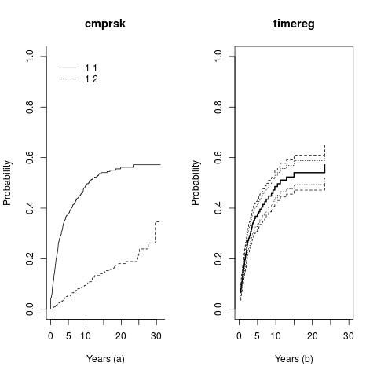
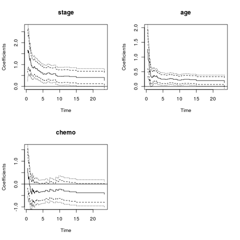
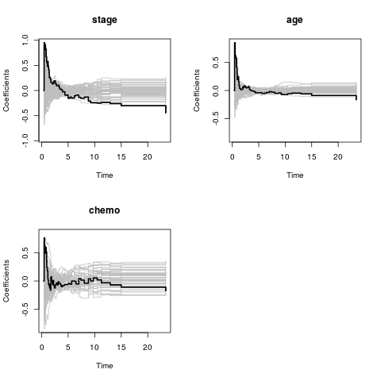
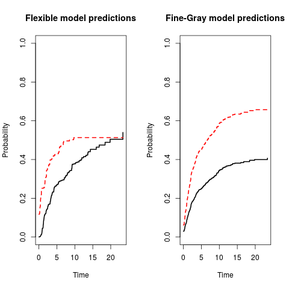
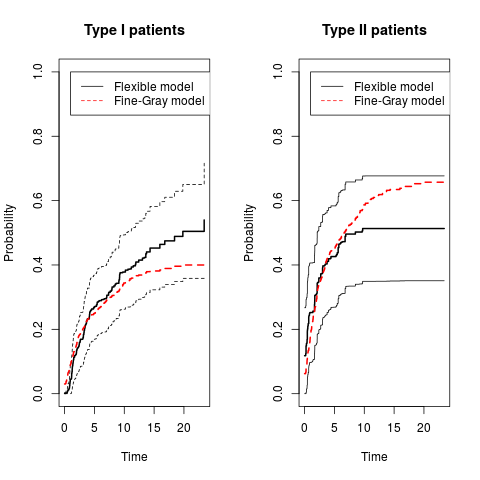

Update code for comp.risk and JSS
Table of Contents
update of code for JSS paper on comp.risk in Timereg
Due to various developments the original code not longer runs, also due to some changes in the numerical procedures. This version of the file is slightly changed and runs !
"Thomas H. Scheike, Mei-Jie Zhang (2011)." "Analyzing Competing Risk Data Using the R timereg Package." "Journal of Statistical Software, 38(2), 1-15." "URL http://www.jstatsoft.org/v38/i02/."
R-code in file
fol <- read.table("follic.txt",sep=",",header=TRUE) evcens <- (fol$resp=="NR" | fol$relsite!="")+0 crcens <- (fol$resp=="CR" & fol$relsite=="" & fol$stat==1)+0 cause <- ifelse(evcens==1,1,ifelse(crcens==1,2,0)) table(cause) stage <- as.numeric(fol$clinstg==2) fol$chemo<-as.numeric(fol$ch=="Y") times1=sort(unique(fol$dftime[cause==1])) fol$age <- scale(fol$age) library("timereg") library("cmprsk") out1 <-comp.risk(Event(dftime,cause)~+1,data=fol,cause=1,model="additive") pout1 <- predict(out1,X=1) group<-rep(1,541) fit<-cuminc(fol$dftime,cause,group,cencode=0) paper <- 0 if (paper==1) pdf("fig1.pdf",height=8,width=13) par(mfrow=c(1,2)) plot(fit,main="cmprsk",xlab="Years (a)") plot(pout1,xlim=c(0,30),xlab="Years (b)",main="timereg",uniform=2,se=3) if (paper==1) dev.off()
[[file:fig1.png]]

## problems with convergence when hgb included outf<-comp.risk(Event(dftime,cause)~stage+age+chemo, data=fol,cause=1,n.sim=5000,model="prop",cens.model="cox") summary(outf)
Competing risks Model
Test for nonparametric terms
Test for non-significant effects
Supremum-test of significance p-value H_0: B(t)=0
(Intercept) 12.10 0.0000
stage 5.04 0.0002
age 4.07 0.0010
chemo 2.18 0.1810
Test for time invariant effects
Kolmogorov-Smirnov test p-value H_0:constant effect
(Intercept) 2.980 0.0000
stage 0.950 0.0190
age 0.853 0.0020
chemo 0.760 0.0212
Cramer von Mises test p-value H_0:constant effect
(Intercept) 13.200 0.0000
stage 2.660 0.0004
age 0.457 0.0030
chemo 0.482 0.3360
paper <- 0 if (paper==1) pdf("fig2.pdf",height=8,width=13) par(mfrow=c(2,2)) for (i in 2:4) plot(outf,specific.comps=i,pointwise.ci=2,sim.ci=3) if (paper==1) dev.off()
[[file:fig2.png]]

if (paper==1) pdf("fig3.pdf",height=8,width=13) par(mfrow=c(2,2)) for (i in 2:4) plot(outf,specific.comps=i,score=1) if (paper==1) dev.off()
[[file:fig3.png]]

outf1<-comp.risk(Event(dftime,cause)~stage+age+const(hgb)+chemo, data=fol,cause=1,times=times1,model="prop") summary(outf1)
Competing risks Model
No test for non-parametric terms
Parametric terms :
Coef. SE Robust SE z P-val lower2.5% upper97.5%
const(hgb) 0.000387 0.00406 0.00406 0.0953 0.924 -0.00757 0.00834
outfg<-comp.risk(Event(dftime,cause)~const(stage)+const(age)+ const(hgb)+const(chemo),data=fol,cause=1,times=times1,model="prop",cens.model="cox") summary(outfg)
Competing risks Model
No test for non-parametric terms
Parametric terms :
Coef. SE Robust SE z P-val lower2.5% upper97.5%
const(stage) 0.678000 0.13900 0.13900 4.8800 1.05e-06 0.40600 0.95000
const(age) 0.280000 0.07210 0.07210 3.8900 1.02e-04 0.13900 0.42100
const(hgb) 0.000149 0.00413 0.00413 0.0362 9.71e-01 -0.00795 0.00824
const(chemo) -0.302000 0.17600 0.17600 -1.7200 8.59e-02 -0.64700 0.04300
## predictions for fg model and outf1 newdata=data.frame(stage=c(0,1),age=c(-1,0.3),hgb=rep(138,2),chemo=c(0,1)) poutf1<-predict(outf1,newdata) poutfg<-predict(outfg,newdata) if (paper==1) pdf("fig4.pdf",height=8,width=13) par(mfrow=c(1,2)) plot(poutf1,multiple=1,se=0,uniform=0,col=1:2,lty=1:2) title(main="Flexible model predictions") plot(poutfg,multiple=1,se=0,uniform=0,col=1:2,lty=1:2) title(main="Fine-Gray model predictions") if (paper==1) dev.off()
[[file:fig4.png]]

paper <- 0 if (paper==1) pdf("fig5.pdf",height=8,width=13) par(mfrow=c(1,2)) plot(poutf1,se=0,uniform=2,col=1,lty=1,specific.comps=1) plot(poutfg,new=0,se=0,uniform=0,col=2,lty=2,specific.comps=1) title(main="Type I patients") legend(1,1.0,c("Flexible model","Fine-Gray model"),lty=1:2,col=1:2) plot(poutf1,se=0,uniform=1,col=1,lty=1,specific.comps=2) plot(poutfg,new=0,se=0,uniform=0,col=2,lty=2,specific.comps=2) title(main="Type II patients") legend(1,1.0,c("Flexible model","Fine-Gray model"),lty=1:2,col=1:2) if (paper==1) dev.off()
[[file:fig5.png]]
